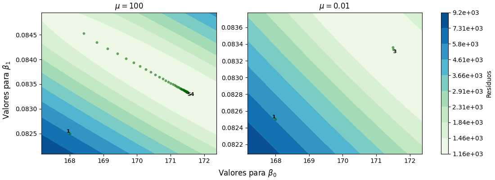

(171.00724094657875, 0.08356097087277026)Otimização
A função exponencial é a “função mais importante da matemática” [Rudin, 1987]. Esta possui aplicações em áreas como: economia, probabilidades, estatística, biologia, física, medicina, engenharia, entre outras.
O crescimento populacional, analisado geralmente através da construção e interpretação de gráficos de dados macroeconómicos, pode ser explicado através das propriedades algébricas e gráficas das funções exponenciais e logarítmicas para o cálculo e interpretação de taxas de crescimento populacional através de séries temporais.
O número de Euler é também muito aplicado nas finanças, principalmente em cálculos de juros compostos, onde a riqueza cresce a uma taxa definida ao longo do tempo.
Um comum problema computacional é o do cálculo da solução para problemas de mínimos quadrados, que possui grande importância numa ampla gama de campos que vão desde a álgebra linear até à econometria e otimização. A função exponencial será utilizada como título exemplificativo para a resolução de sistemas não lineares de equações no presente trabalho. Neste, iremos apresentar algoritmos numericamente estáveis e computacionalmente eficientes para calcular a solução do problema de mínimos quadrados.
A descoberta do vetor de parâmetros que minimiza a função objetivo pode ser realizada com recurso a várias técnicas. No presente trabalho serão abordadas duas das mesmas, a decomposição QR e o método de Levenberg-Marquardt.
A decomposição QR foi considerada um dos 10 algoritmos com maior influência no desenvolvimento e na prática da ciência e da engenharia no século XX.
Contudo, a crescente complexidade da produção industrial aumenta os requisitos de precisão e velocidade.
Métodos de resolução de sistemas não lineares como o de Levenberg-Marquardt e evoluções destes são essenciais para assegurar a satisfação da crescente procura por uma otimização mais eficiente.
A decomposição QR é utilizada para a resolução de sistemas sobredeterminados, através do método dos mínimos quadrados.
A decomposição QR tem como objetivo expressar uma matriz \(A\in \mathbb{M}_{m,n} (\mathbb{R})\) no produto de duas matrizes, tal que: \[\begin{equation} A=QR \end{equation}\] onde \(Q\in \mathbb{M}_{m,n} (\mathbb{R})\) é uma matriz cujas colunas formam uma base ortonormada para o espaço das colunas de A (isto é, \(Q^T Q = I_n\)) e \(R\in \mathbb{M}_{n,n} (\mathbb{R})\) é uma matriz invertível, triangular superior com entradas diagonais positivas.
A aplicação do processo de ortonormalização de Gram-Schmidt requer a utilização dos vetores que correspondem às colunas da matriz A. \[\begin{equation} A=[a_1|a_2|...|a_n] \end{equation}\] Dois passos essenciais do processo referido são a ortogonalização e a normalização. A realização da ortogonalização tem como intuito a transformação do conjunto de vetores linearmente independentes num conjunto ortogonal, onde cada vetor é ortogonal (perpendicular) aos outros. A normalização transforma este conjunto ortogonal num conjunto ortonormal, isto é, cada vetor possui norma igual a 1.
\[\begin{multline} \begin{aligned} & \text{Ortogonalização} && \text{Normalização} \\ & v_1 = a_1, && q_1 = \frac{v_1}{\|v_1\|_2} \\ & v_2 = a_2 - (q_1^T \cdot a_2) q_1, && q_2 = \frac{v_2}{\|v_2\|_2} \\ & v_3 = a_3 - (q_1^T \cdot a_3) q_1 - (q_2^T \cdot a_3) q_2, && q_3 = \frac{v_3}{\|v_3\|_2} \\ & \vdots && \hspace{7.65cm} \\ & v_n = a_n - (q_1^T \cdot a_n) q_1 - \ldots - (q_{n-1}^T \cdot a_n) q_{n-1}, && q_n = \frac{v_n}{\|v_n\|_2} \end{aligned} \end{multline}\]
Note-se que após o processo de ortogonalização e normalização, obtém-se a decomposição QR da matriz A:
\[\begin{equation} A = [q_1| q_2|...| q_n] \begin{bmatrix} \|v_1\|_2 & q_1^T\cdot a_2 &...& q_1^T\cdot a_n \\ 0 & \|v_2\|_2 &...& q_2^T\cdot a_n \\ \vdots & \vdots & \ddots &\vdots \\ 0 & 0 &...& \|v_n\|_2 \end{bmatrix} = QR \end{equation}\]
import numpy as np
def QRdecomposition_Gram_Schmidt(A):
"""
entrada:
A - matriz a decompor
saída:
Q - matriz ortogonal
R - matriz triangular superior
"""
q = [] #sera a lista de colunas de Q
R = np.zeros((len(A[0]), len(A[0])), dtype=float) # matriz R, preenchida de zeros
# percorrer as colunas da matriz A
for i in range(len(np.transpose(A))):
ai = np.transpose(A)[i] #ai = coluna i de A
projecoes = 0 #a subtrair no calculo de vi
# percorrer as colunas Q ja calculadas
for n in range(len(q)):
qn = q[n] #qn = coluna n de Q, ja calculada, pelo que n < i
R[n][i] = np.inner(qn,ai) #calcular r_{n,i}
projecoes += R[n][i]*qn #somar as projecoes a subtrair a ai
# calcular vi
vi = ai - projecoes
# calcular r_{i,i}: norma 2 de vi
R[i][i] = np.sqrt(np.inner(vi,vi))
# calcular qi: normalizacao de vi
qi = vi/R[i][i]
q.append(qi)
# converter q numa matriz (Q') e transpor
Q = np.transpose(np.vstack(q))
return Q,RPretende-se utilizar a decomposição QR para estimar os parâmetros que otimizam, no sentido dos mínimos quadrados, uma função exponencial \(y(x)\): \[\begin{equation} y(x)=\beta_{0} e^{\beta_{1}x} \end{equation}\]
Todavia, a função \(y(x)\) não é linear pelo que não é possível obter a matriz \(A\), impossibilitando a aplicação da decomposição QR. Por esse motivo, terão que ser realizadas transformações na expressão com o objetivo de linearizar a mesma.
Aplicando logaritmos, \[\begin{equation} ln(y(x))=ln(\beta_{0} e^{\beta_{1}x}) \end{equation}\]
Através das propriedades dos logaritmos, \[\begin{equation} ln(y(x))=ln(\beta_{0}) + \beta_{1}x \end{equation}\]
\(\ \)
Assumindo \(P(x)=ln(y(x))\), \(a_0=ln(\beta_{0})\) e \(a_1=\beta_{1}\), tem-se \[\begin{equation} P(x)=a_0 + a_1x \end{equation}\]
Uma vez obtida a função \(y(x)\) como combinação linear de funções, a fase de linearização está completa.
A descoberta dos parâmetros passa pela resolução do sistema \(Ax=b\), onde \(A\) é a matriz de coeficientes dos parâmetros a estimar do sistema de equações, \(x\) é o vetor solução dos parâmetros a estimar e \(b\) é o vetor que contém as variáveis resposta do sistema de equações.
Aplicando a decomposição QR à matriz \(A\) obtém-se \(QR=A\), pelo que podem ser efetuadas as seguintes equivalências matriciais: \[\begin{equation} Ax=b \Leftrightarrow QRx=b \Leftrightarrow Q^TQRx=Q^Tb \Leftrightarrow IRx=Q^Tb \Leftrightarrow Rx=Q^Tb \end{equation}\] Sendo assim, a resolução do sistema de equações \(Ax=b\), para a obtenção do vetor \(x\) dos parâmetros, passa pela resolução do sistema \(Rx=Q^Tb\).
\(\ \)
\[\begin{equation} \begin{split} Ax=b & \Leftrightarrow \begin{bmatrix} 1 & x_1 \\ 1 & x_2 \\ \vdots & \vdots \\ 1 & x_n \end{bmatrix} \begin{bmatrix} ln(\beta_0) \\ \beta_1 \end{bmatrix} = \begin{bmatrix} ln(y_1) \\ ln(y_2) \\ \vdots \\ ln(y_n) \end{bmatrix} \\ & \\ & \Leftrightarrow R \begin{bmatrix} ln(\beta_0) \\ \beta_1 \end{bmatrix} = Q^T \begin{bmatrix} ln(y_1) \\ ln(y_2) \\ \vdots \\ ln(y_n) \end{bmatrix} \end{split} \end{equation}\]
Dado o seguinte conjunto de pontos acerca do Bangladesh, pretende-se analisar o crescimento exponencial do Rendimento Nacional Bruto (RNB) do mesmo de 2000 a 2019. Os valores de \(x\) correspondem aos anos e os valores de \(y\) ao RNB (em unidades por milhares de milhões de dólares).
\(\ \)
| \(x_i\) | \(0\) | \(1\) | \(2\) | \(3\) | \(4\) | \(5\) | \(6\) | \(7\) | \(8\) | \(9\) |
|---|---|---|---|---|---|---|---|---|---|---|
| \(y_i\) | \(175.5\) | \(188.1\) | \(200.2\) | \(213.7\) | \(231.6\) | \(254.7\) | \(283.1\) | \(313.5\) | \(342.9\) | \(363.7\) |
| \(x_i\) | \(10\) | \(11\) | \(12\) | \(13\) | \(14\) | \(15\) | \(16\) | \(17\) | \(18\) | \(19\) |
|---|---|---|---|---|---|---|---|---|---|---|
| \(y_i\) | \(389.1\) | \(422.2\) | \(481.1\) | \(518.8\) | \(555.1\) | \(591.6\) | \(643.1\) | \(693.0\) | \(767.3\) | \(846.1\) |
A amostra de dados pode ser explicada pela função \(y(x)=\beta_{0} e^{\beta_{1}x}\), pelo que se pretende obter o vetor de parâmetros que minimiza a soma dos quadrados dos resíduos, através da aplicação da decomposição QR.
A função \(y(x)\) já foi linearizada anteriormente, obtendo-se \[\begin{equation} ln(y(x))=ln(\beta_{0}) + \beta_{1}x \end{equation}\]
De seguida, os pontos referidos são aplicados à expressão obtida. A dedução do vetor de parâmetros que contém \(\beta_{0}\) e \(\beta_{1}\) passa pela resolução do sistema sobredeterminado \(Ax=b\), através do seguinte algoritmo elaborado:
x = list(range(19 + 1))
y = [np.log(value) for value in [175.5, 188.1, 200.2, 213.7, 231.6, 254.7, 283.1,
313.5, 342.9, 363.7, 389.1, 422.2, 481.1, 518.8,
555.1, 591.6, 643.1, 693.0, 767.3, 846.1]]
# Ax = b; x = [ln(b0), b1]
A = np.column_stack((np.ones(len(x)), x))
b = np.array(y).reshape(-1, 1)
Q, R = QRdecomposition_Gram_Schmidt(A) # QRx = b
Rx = np.dot(np.transpose(Q), b) # Rx = Qt*b
x = np.zeros(len(R))
for i in range(len(R) - 1, -1, -1):
x[i] = (Rx[i, 0] - np.dot(R[i, i + 1:], x[i + 1:])) / R[i, i]
b0, b1 = np.exp(x[0]), x[1]
b0, b1(171.00724094657875, 0.08356097087277026)A função que minimiza os quadrados dos resíduos é \(y = 171.0\ e^{0.08356x}\).
Figura 1: Gráfico dos valores observados para a variável explicativa e resposta, em conjunto com o modelo ajustado.
Dada uma função não linear nos parâmetros, o problema dos mínimos quadrados requer um algoritmo iterativo. Tais algoritmos reduzem a soma dos quadrados dos erros entre a função do modelo e os pontos dados através de uma sequência de atualizações bem escolhidas nos valores dos parâmetros do modelo.
Para equações não lineares, pode não haver solução, pode haver um qualquer número de soluções, ou um número infinito de soluções. Ao contrário das equações lineares, é um problema computacional muito difícil determinar qual destes casos é válido para um determinado conjunto de equações. Assim sendo, para problemas não lineares, apenas se pode esperar um algoritmo que encontre uma solução (quando existe) ou produza um valor de \(x\) com norma residual que seja a menor possível.
O algoritmo de Levenberg-Marquardt combina dois algoritmos de minimização numérica: o método de declive máximo e o método de Gauss-Newton.
O problema da regressão exponencial apresentado anteriormente pode também ser resolvido através deste processo, o método de Levenberg-Marquardt. Este não envolve linearização, pelo que pode ser utilizado diretamente em funções não lineares, o que lhe confere uma maior precisão em termos numéricos e robustez para funções não lineares.
Por conseguinte, num problema não linear de mínimos quadrados, a função objetivo é a mesma do caso de funções lineares, e consiste na descoberta do vetor de parâmetros \(x\) que minimiza: \[\begin{equation} g(x)=\frac{1}{2}\ r(x)\ r(x)^T=\frac{1}{2}\sum_{i=1}^{m}r_i(x)^2 \end{equation}\]
Apesar de a função objetivo ser igual independentemente da função ser linear ou não, os resíduos \[\begin{equation} r_i(x)=y_i-f(x), \quad i=1,...,m \end{equation}\] são não lineares, tal como a função \(f(x)\).
Note-se que, o gradiente da função objetivo é dado por \[\begin{equation} \nabla g(x) = \sum_{i=1}^{m}r_i(x) \cdot \nabla r_i(x) = \nabla r(x)^Tr(x) \end{equation}\]
onde \[\begin{equation} \nabla r(x)=\begin{bmatrix} \frac{\partial r_1(x)}{\partial x_1} & \cdots & \frac{\partial r_1(x)}{\partial x_n} \\ \vdots & & \vdots \\ \frac{\partial r_m(x)}{\partial x_1} & \cdots & \frac{\partial r_m(x)}{\partial x_n} \end{bmatrix} \end{equation}\] é a matriz \(m \times n\) Jacobiana do resíduo \(r\) em relação aos parâmetros \(x\).
O vetor \[\begin{equation} \nabla r_i(x)=\begin{bmatrix} \frac{\partial r_i(x)}{\partial x_1} \\ \vdots \\ \frac{\partial r_i(x)}{\partial x_n} \end{bmatrix} \end{equation}\] corresponde à linha \(i\) da matriz Jacobiana.
A segunda derivada de \(g(x)\) é dada pela matriz Hessiana \[\begin{equation} \begin{split} \nabla^2 g(x) & =\sum_{i=1}^{m}(\nabla r_i(x) \cdot \nabla r_i(x)^T+r_i(x) \cdot \nabla^2 r_i(x))\\ & =\nabla r(x)^T\nabla r(x) + S(x), \quad \text{com } S(x)=\sum_{i=1}^{m}r_i(x) \cdot \nabla^2 r_i(x) \end{split} \end{equation}\]
O método LM sugere a aproximação da matriz \(S(x)\) pela matriz \(\mu I\) \[\begin{equation} (\nabla r(x^{(k)})^T\nabla r(x^{(k)})+\mu^{(k)}I)s^{(k)}_{LM}=-\nabla r(x^{(k)})^T r(x^{(k)}) \end{equation}\]
A matriz \(\nabla r(x^{(k)})^T\nabla r(x^{(k)})+\mu^{(k)}I\) é simétrica e definida positiva, \(n \times n\) (com \(n\) igual ao número de parâmetros a estimar).
Pode-se portanto, proceder à resolução do sistema de diversas maneiras, como: a decomposição de Cholesky, a decomposição LU, entre outras, encontrando dessa forma \(s^{(k)}_{LM}\).
O vetor dos parâmetros \(x\) será atualizado mediante cada iteração da seguinte forma, \[\begin{equation} x^{(k+1)}=x^{(k)}+s^{(k)}_{LM} \end{equation}\]
A cada iteração, o valor de \(x^{(k+1)}\) estará mais próximo do valor ótimo (o que minimiza a soma dos quadrados), pelo que se deve definir uma condição de paragem, podendo esta ser a quantidade de iterações, um valor máximo para a norma do gradiente da função objetivo, \(\|\nabla g(x)\|\), ou um valor máximo para o erro, sendo o erro calculado por exemplo por \(\|s^{(k+1)}_{LM}\|_{\infty}\).
Desta forma, quando é alcançada a precisão desejada o processo iterativo é interrompido, evitando assim iterações desnecessárias e economizando recursos computacionais.
Note-se que o método LM é um método iterativo para otimização não linear, pelo que é imperativo o fornecimento de uma aproximação inicial dos parâmetros do modelo para uma inicialização adequada das iterações do algoritmo.
import numpy as np
def LM_iteration(X, Y, ig, miu):
"""
entrada:
X,Y - conjunto de pontos
ig, miu - aproximacao inicial (b0, b1), parametro mu
saida:
b0, b1 - coeficientes atualizados
"""
matrix_r = np.zeros((len(X), 1)) # matriz dos residuos (R)
grad_r = np.zeros((len(X), 2)) # gradiente de R
b0, b1 = ig
# atualizar matrizes
for row in range(len(X)):
matrix_r[row, 0] = Y[row] - b0 * np.exp(b1 * X[row])
grad_r[row, 0] = -np.exp(b1 * X[row]) # r gradiente: col. 1
grad_r[row, 1] = -b0 * X[row]* np.exp(b1 * X[row]) # r gradiente: col. 2
# calcular A(s_LM) = b
A = np.dot(grad_r.T, grad_r) + np.eye(2) * miu
b = -np.dot(grad_r.T, matrix_r)
# resolver s_LM atraves Cholesky
L = np.linalg.cholesky(A)
s_LM_y = np.linalg.solve(L, b)
s_LM = np.linalg.solve(L.T, s_LM_y)
# atualizar betas
b0, b1 = float(b0 + s_LM[0]), float(b1 + s_LM[1])
return b0, b1, s_LMConsiderando o mesmo conjunto de pontos utilizado na decomposição QR, efetua-se agora uma abordagem diferente do mesmo, recorrendo ao método de Levenberg-Marquardt.
\(\ \)
| \(x_i\) | \(0\) | \(1\) | \(2\) | \(3\) | \(4\) | \(5\) | \(6\) | \(7\) | \(8\) | \(9\) |
|---|---|---|---|---|---|---|---|---|---|---|
| \(y_i\) | \(175.5\) | \(188.1\) | \(200.2\) | \(213.7\) | \(231.6\) | \(254.7\) | \(283.1\) | \(313.5\) | \(342.9\) | \(363.7\) |
| \(x_i\) | \(10\) | \(11\) | \(12\) | \(13\) | \(14\) | \(15\) | \(16\) | \(17\) | \(18\) | \(19\) |
|---|---|---|---|---|---|---|---|---|---|---|
| \(y_i\) | \(389.1\) | \(422.2\) | \(481.1\) | \(518.8\) | \(555.1\) | \(591.6\) | \(643.1\) | \(693.0\) | \(767.3\) | \(846.1\) |
x = list(range(19 + 1))
y = [175.5, 188.1, 200.2, 213.7, 231.6, 254.7, 283.1, 313.5, 342.9, 363.7, 389.1, 422.2,
481.1, 518.8, 555.1, 591.6, 643.1, 693.0, 767.3, 846.1]
ig = (170, 0.0836) #obtido atraves do QR
miu = 0.1
iteracoes = 1
while True:
b0, b1, s_LM = LM_iteration(x, y, ig, miu)
# condicao de paragem
if max(abs(s_LM)) < 0.5*10**(-6):
break
# atualizar parametros
ig, miu, iteracoes = (b0, b1), 0.1, iteracoes + 1
iteracoes, b0, b1(4, 171.5072875301047, 0.08333471235500428)Assim, após o algoritmo de Levenberg-Marquardt realizar 4 iterações, a função que minimiza os quadrados dos resíduos, de acordo com o mesmo, é dada por aproximadamente \(y = 171.5\ e^{0.08333x}\).
Podemos confirmar este resultado através da aplicação da função \(nls\), do R. Esta distingue-se do método LM apenas pelo facto do parâmetro \(\mu\) ter um valor nulo, pelo que o método utilizado por esta função é o método de Gauss-Newton. Utilizando os dados definidos anteriormente:
Nonlinear regression model
model: y ~ b0 * exp(b1 * x)
data: parent.frame()
b0 b1
171.50728 0.08333
residual sum-of-squares: 1159
Number of iterations to convergence: 2
Achieved convergence tolerance: 4.694e-07Os resultados são idênticos, mas tendo em conta o número de iterações, a escolha do valor do parâmetro \(\mu\) terá sido conservadora.
Figura 2: Gráfico dos valores observados para a variável explicativa e resposta, em conjunto com o modelo ajustado.
É importante recordar que o método de Levenberg-Marquardt não garante a descoberta do mínimo global. O sucesso da resolução do problema de otimização irá depender da natureza do problema e da qualidade da aproximação inicial escolhida, pelo que se torna essencial uma análise específica do problema.
Caso a aproximação inicial esteja muito longe do mínimo global, o algoritmo pode convergir para um mínimo local, uma solução que é ótima dentro de uma determinada vizinhança, mas pode não ser o ótimo global para toda a região de parâmetros. Isto pode ser resolvido através da seleção de uma aproximação inicial próxima da solução esperada, o que muitas vezes implica um conhecimento à priori ou uma análise minuciosa dos dados.
Uma boa escolha fornece ao algoritmo um ponto de partida próximo da solução ótima, permitindo uma convergência mais rápida. Por outro lado, uma escolha inadequada, que esteja muito longe do mínimo global, leva a uma convergência lenta, aumentando o número de iterações necessárias e a exigência computacional. Para além disso, pode levar o algoritmo a convergir para um mínimo local ou a falhar na convergência.
Apesar de haverem diversos métodos para se obter uma aproximação inicial para o algoritmo, os dois mais comuns são a utilização dos resultados de aproximações lineares, por exemplo através da decomposição QR, ou então por tentativa e erro, isto é, executar o algoritmo de otimização várias vezes com diferentes aproximações iniciais aleatórias, explorando diferentes regiões do espaço de parâmetros, e compararando as mesmas, de modo a reduzir o risco de se obter um mínimo local e não global.
O valor do parâmetro \(\mu\), frequentemente chamado de termo de amortecimento, no algoritmo de Levenberg-Marquardt, impacta diretamente o termo \(\mu I\), regularizando a matriz Hessiana (\(\nabla ^2 g(x)\)) durante a sua inversão, para o cálculo da atualização dos parâmetros do modelo durante a otimização, tornando-a mais estável numericamente.
A seleção do valor para o parâmetro \(\mu\) desempenha um papel crucial no comportamento do algoritmo de Levenberg-Marquardt, pelo que a sua escolha deve ser cuidada.
Caso o valor de \(\mu\) seja pequeno (\(\mu \rightarrow 0\)), o algoritmo de Levenberg-Marquardt assemelha-se ao método de Gauss-Newton. Nesse cenário, a atualização dos parâmetros tem uma maior ponderação da matriz Jacobiana, tornando o processo de otimização menos cuidadoso, o que resulta numa convergência mais rápida.
Quando o valor de \(\mu\) é grande (\(\mu \rightarrow \infty\)), o comportamento do algoritmo de Levenberg-Marquardt aproxima-se do método de declive máximo. Nesse caso, \(\mu I\) torna-se dominante na atualização dos parâmetros, o que resulta num processo de otimização mais cuidadoso em que \(x^{(k+1)}\) está próximo de \(x^{(k)}\), aumentando a estabilidade numérica do algoritmo.
Visualize-se o impacto da escolha do parâmetro \(\mu\) na resolução do exemplo relativo ao método LM. A aproximação inicial é (\(168, 0.0825\)), a condição de paragem é \(\|s^{(k)}_{LM}\|_{\infty}<0.5 \times 10^{-3}\) e o parâmetro \(\mu\) irá assumir dois valores: um valor grande e um valor pequeno:
Figura 3: Resíduos em função dos parâmetros a estimar e de \(\mu\).
A escolha do valor para \(\mu\) envolve um equilíbrio entre a velocidade de convergência e a estabilidade numérica do algoritmo, pelo que a sua escolha deve ter em conta as características específicas do problema, não sendo escolhido de forma arbitrária.
Algumas publicações indicam que o parâmetro deve ser escolhido pelo utilizador do algoritmo, outras indicam que o mesmo deve ser atualizado a cada iteração de acordo com o valor de \(\| \nabla r(x^{(k)})' r(x^{(k)}) \|\), há quem indique que se deve começar com um valor pequeno para o parâmetro e dividir ou multiplicar por 10 caso a função objetivo melhore ou piore, respetivamente, etc.
Assim sendo, o método de Levenberg-Marquardt deve atuar mais como o método de declive máximo quando os parâmetros estão longe do seu valor ótimo, e atuar mais como o método de Gauss-Newton quando os parâmetros estão próximos do mesmo.
A realização deste trabalho permitiu a análise da eficiência e da confiabilidade de duas técnicas fundamentais: a decomposição QR e o método de Levenberg-Marquardt, na estimativa de parâmetros para modelos matemáticos, nomeadamente, modelos exponenciais.
Note-se que é de elevada importância relembrar os resultados dos exemplos elaborados. Enquanto que no exemplo associado à decomposição QR se obteve o vetor de parâmetros (\(171.0\), \(0.08356\)), no exemplo associado ao método de Levenberg-Marquardt o vetor de parâmetros obtido foi (\(171.5\), \(0.08333\)).
Deve-se portanto, analisar o valor ótimo da função objetivo \(g(x)=\frac{1}{2}\sum_{i=1}^{m}r_i(x)^2\) para cada vetor de parâmetros:
def funcao_objetivo(y,x,beta):
r_i = y - beta[0]*np.exp(beta[1]*x)
valor_otimo = 0.5 * np.sum(r_i**2)
return valor_otimo
beta_QR, beta_LM = (171.0, 0.08356), (171.5, 0.08333)
funcao_objetivo(y,x,beta_QR), funcao_objetivo(y,x,beta_LM)(582.0077304979613, 579.6157244799521)Verifica-se que o valor ótimo obtido pelos parâmetros associados à decomposição QR é superior ao valor ótimo obtido pelos parâmetros associados método de Levenberg-Marquardt (\(582.0 > 579.6\)), pelo que o método LM efetuou uma otimização mais precisa face à associada à decomposição QR, dado que é um problema de minimização.
Esta diferença nos resíduos estará associada à precisão numérica da técnica, isto é, pelo facto do algoritmo LM ser de aplicação direta, enquanto que para aplicar a decomposição QR, têm de ser realizadas diversas operações para linearizar a função. Era portanto expectável que a precisão associada à decomposição QR na estimação dos parâmetros fosse menor, devido à propagação do erro.
A pesquisa sobre a decomposição QR demonstra a sua eficácia, já conhecida, na resolução de sistemas de equações lineares. Através da decomposição da matriz dos coeficientes dos parâmetros a estimar, é possível a agilização do processo de descoberta do vetor de parâmetros ótimo. Este processo torna-se particularmente benéfico quando estamos perante sistemas lineares de maior dimensão.
Contudo, considerando modelos exponenciais, pelo facto de ser necessário linearizar o modelo, a decomposição QR é afetada pela propagação do erro, logo é importante proceder a uma análise crítica dos resultados e considerar métodos de otimização mais avançados.
De qualquer forma, a utilização desta técnica pode ser extremamente útil para se obter uma aproximação inicial para métodos iterativos como é o caso da segunda técnica utilizada, o método LM.
Tendo em conta o método de Levenberg-Marquardt, pode-se verificar que este é uma interpolação entre o método de Gauss-Newton e o método de declive máximo, ainda que mais robusto que o primeiro. Percebe-se isto quando, na maioria dos casos, é possível obter uma solução mesmo quando se parte de um ponto muito longe do mínimo ótimo, ainda que mais lentamente que o método de Gauss-Newton.
Para além disso, ao analisar os resultados do exemplo relativo a este método, verifica-se que o mesmo é uma ferramenta valiosa para a estimação de parâmetros ótimos em modelos não lineares, nomeadamente modelos exponenciais, destacando a sua robustez e adaptabilidade.